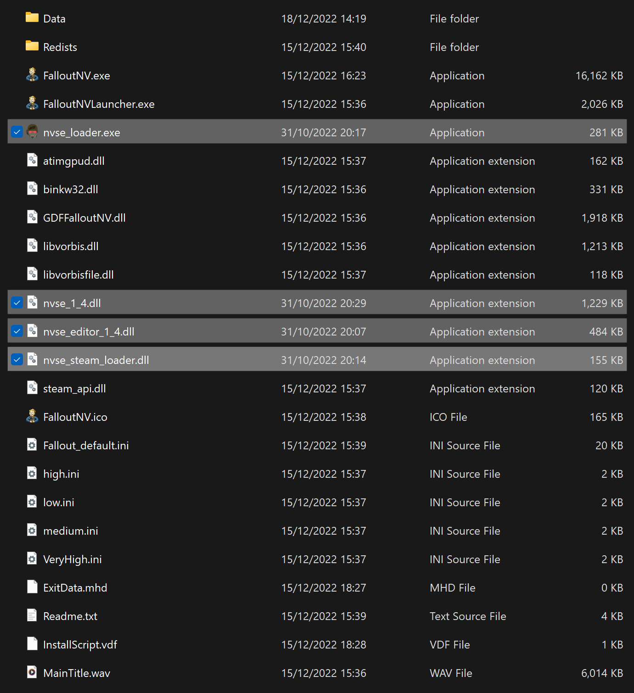

Essential Mods
Make sure the The Best of Times profile is active before proceeding.
Creating a Separator in MO2.
- Right-click the empty space in the left pane of MO2 and select Create Separator.
- Name the separator Essential Mods.
Installation instructions:
- Main Files - New Vegas Script Extender (NVSE) (Manual Download).
- From the downloaded archive, extract everything to the game's Root folder.
If you do not know what the Root folder is, read the Key Terminology section from the Setup page.
Despite its name, nvse_steam_loader.dll is still needed with the GOG version of the game.An updated version of the original NVSE, which extends the scripting capabilities of the game.
After proper install, your Root Folder should look like this:

This is required for both Steam & GOG users! The 4GB Patch included with the GOG release is obsolete as it lacks NVSE integration.
Installation instructions:
- Download the Main Files - 4GB Patcher.
- From the downloaded archive, extract the .exe file to the game's Root folder.
- Right-click on FNVpatch.exe and select Run as administrator.
- A command prompt window will open and should say FalloutNV.exe patched!
- Close the command prompt and a file named FalloutNV_backup.exe should appear in the game's Root folder.
From now on, you should run the game through the Tale of Two Wastelands option in MO2, rather than the NVSE option. This mod makes the game auto-load NVSE when you run the game through the default executable, which is generally the safer option.
Installation instructions:
- Download the Main Files - NVHR using the Manual Download button.
- From the downloaded archive, extract everything to the game's Root folder.
Installation instructions:
- Main Files - ROOGNVSE
This is the first mod in the guide that is installed with the Mod Manager Download button, you will need to click that button then head to the Downloads section of Mod Organizer 2 to install it. Once installed, make sure you check the box next to it in the left pane of MO2 to enable it.
Installation instructions:
- Main Files - JIP LN NVSE Plugin
- Main Files - JIP LN Settings INI
Installation instructions:
- Main Files - JohnnyGuitar NVSE
Installation instructions:
- Download the CrashLogger.zip from GitHub.
- Install the mod manually with Mod Organizer.
Installation instructions:
- Main Files - NVTF
- Viva Default Preset
IMPORTANT: If you are running the game at higher than 1080p, install the Texture Modding and High Res Preset instead!Fixes micro-stuttering, performance and allows playing at higher framerates (below 300).
lStewieAl's Tweaks and Engine Fixes
Installation instructions:
- Main Files - Stewie Tweaks
Installation instructions:
- Main Files - Stewie Tweaks Essentials INI
Installation instructions:
- Main Files - Fast Weapon Lag Fix
Installation instructions:
- Main Files - ActorCause Save Bloat Fix
Installation instructions:
- Main Files - MLF
Installation instructions:
- Main Files - kNVSE
Installation instructions:
- Main Files - Improved Console
Installation instructions:
- Main Files - Console Paste
Installation instructions:
- Main Files - Basic Console Autocomplete
Installation instructions:
- Main Files - ShowOff NVSE
Installation instructions:
- Main Files - UIO - User Interface Organizer
- Make sure the The Best of Times profile is active.
- Click the
 button at the top of MO2 and select INI Editor.
button at the top of MO2 and select INI Editor. - Select the FalloutCustom.ini tab, which should be blank.
- Make sure you are in the FalloutCustom.ini tab and NOT the Custom.ini tab.
- Paste in the following:
It is highly recommended to avoid changing any other INI settings not in the guide, and to avoid using tools like BethINI. You will realistically not need any other tweaks than the ones already in the guide.
Performance and Stability Guide
- Restart your PC (otherwise some plugins will print out 0).
- Launch the game using the Tale of Two Wastelands option in MO2 (not the NVSE option).
- If you see a black console window appear, it means NVHR is working.
- If not, NVHR is installed incorrectly.
- Once the game has reached the main menu, hit the
~key (above the tab key) to open the console. - You will need to unplug/disconnect any controllers to be able to use the keyboard.
- Enter
GetNVSEVersionand the console should printNVSE version: 6 - If not, xNVSE is installed incorrectly.
- Next, enter
GetIsLAAand the console should printGetIsLAA >> 2 - If it prints
>> 0, then the 4GB Patch was applied incorrectly. - If it prints an error message, then JIP LN NVSE is installed incorrectly.
- Next, enter
GetINISetting "bUseThreadedAI:General"and the console should printINISetting bUseThreadedAI:General >> 1 - If not, then the Tweaking FalloutCustom.ini step was done incorrectly.
- Next, enter
IsDLLLoaded CrashLoggerand the console should printIsDLLLoaded "CrashLogger.dll" >> 1 - If not, then Crash Logger is installed incorrectly.
- Next, enter
IsDLLLoaded NVTFand the console should printIsDLLLoaded "nvtf.dll" >> 1 - If not, then NVTF is installed incorrectly.
- Lastly, enter
IsDLLLoaded mlfand the console should printIsDLLLoaded "mlf.dll" >> 1 - If not, then Mod Limit Fix is installed incorrectly.